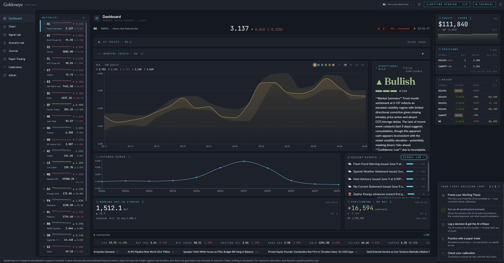

I study how people decide, and I build the instruments that let them see it.
- Position
- Assistant Professor of Experiential Media and Data Communications
- School
- School of Design + Society, Illinois Institute of Technology
- Studio
- Co-founder, ChiLab Design Studio
- Research
- Five strands, publications and talks
- CV
- Full CV, HTML and PDF
00Featured project

Goldeneye Research Terminal
A research instrument for commodity markets that records an analyst's conviction at the moment of judgment and resolves it against what the market did.
- Category
- Research
- Year
- 2026–present
- Measures
- Decision quality, independently of outcome
- Finding
- The audit found no confirmed directional predictive edge. Calibrated volatility ranges are the one confirmed capability.
01Selected work
Index of 9 projects
02Practice
Engagements and partnershipsI work with industry, civic and cultural partners on selected projects, through Illinois Tech and independently.
- Decision-quality instruments
- Data visualization
- Experiential media
- Fabrication, through ChiLab Design Studio
Prior partners include Argonne National Laboratory · University of Chicago · Skidmore, Owings & Merrill · Chicago Architecture Foundation · City of Chicago · Adler Planetarium · Microsoft · Motorola Solutions · United Airlines · Wilson Sporting Goods
03Writing
All essays and publicationsEssays
The rendering is not the building
[SUBTITLE OR EXCERPT]
[ESSAY TITLE]
[SUBTITLE OR EXCERPT]
[ESSAY TITLE]
[SUBTITLE OR EXCERPT]
Publications
Rodda, W. B. Decision quality as a portable analytic lens for game studies: Method, coding protocol, and illustrative analysis of Wing Commander. Games and Simulation (Springer).Under review, 2026
Collisson, B., & Rodda, W. B. Do you want to play a game? Educational escape rooms and the skillful psychology student. Scholarship of Teaching and Learning in Psychology.Journal article, 2025
Bergerson, J., Muehleisen, R. T., Rodda, W. B., Guzowski, L., Ozik, J., Auld, J., & Collier, N. Designing future cities: LakeSIM integrated design tool. ISOCARP Review 11.Book chapter, 2015
04About
Bo Rodda studies and builds at the intersection of design, computation, and lived experience. As Assistant Professor of Experiential Media and Data Communications in the School of Design + Society at Illinois Institute of Technology, his research spans game studies, urban computing, and data visualization, with recent peer-reviewed work developing decision quality as a portable method for analyzing games and decision environments. He has built dynamic urban data platforms with the University of Chicago and Argonne National Laboratory, exhibited internationally as co-founder of ChiLab Design Studio, and led dozens of industry-partnered design studios at Illinois Tech's Kaplan Institute.
Research strands